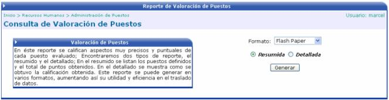
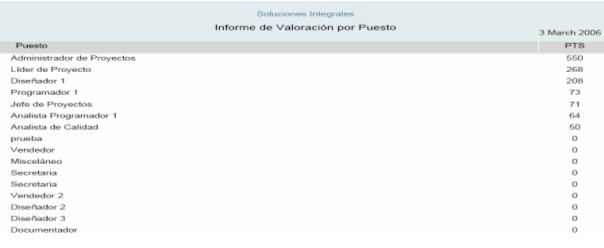
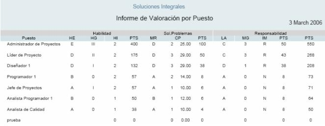

En esta opción, el usuario tiene la posibilidad de escoger el tipo de consulta, ya sea resumida o detallada. En la resumida se le presentará la lista de los puestos definidos y el total de puntos obtenidos. En la consulta detallada, se muestra como se obtuvo la calificación.
Además el usuario puede escoger el formato del reporte, puede ser en Flash Paper, Adobe PDF o Microsoft Excel.

Consulta Resumida, formato Flash Paper:

Consulta Detallada, formato Flash Paper:
